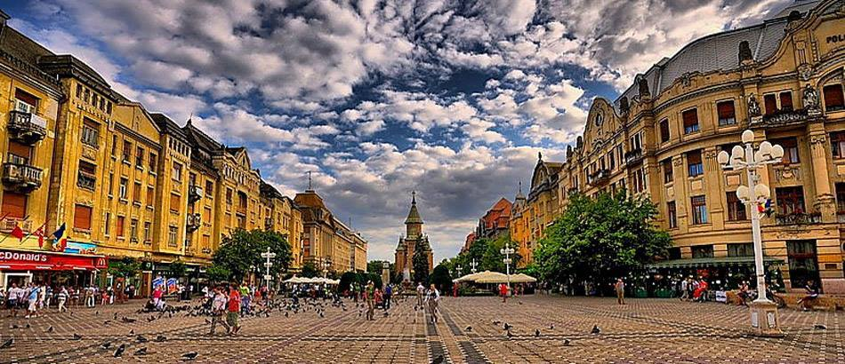

Tourist attractions
Best of Timisoara
Historical churches
Museums
Parks and GreenPlaces
What can you do?
Theater and opera
Art and culture
Shopping
Clubs and Bars
Restaurants and Pubs
Where can you stay?
About Timisoara
Town's history
Local legents
Timisoara in photos
Presentation video
